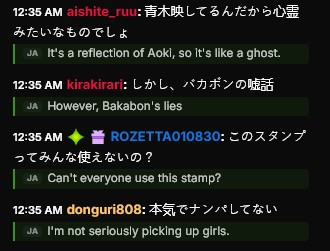

Real-time, two-way translation for Kick.com. It reads incoming chat in your language, and turns what you type into the channel's language — automatically. Free, open-source, private. Kick.com 向けのリアルタイム双方向翻訳。受信チャットをあなたの言語で表示し、入力した文章をチャンネルの言語へ自動変換します。無料・オープンソース・プライバシー重視。 Traducción bidireccional en tiempo real para Kick.com. Lee el chat entrante en tu idioma y convierte lo que escribes al idioma del canal, automáticamente. Gratis, código abierto y privado. Tradução bidirecional em tempo real para a Kick.com. Lê o chat recebido no seu idioma e converte o que você digita para o idioma do canal, automaticamente. Grátis, código aberto e privado.
You never pick a language. The extension detects both ends for you — your own language from the browser, the channel's language from Kick. 言語を選ぶ必要はありません。あなたの言語はブラウザから、チャンネルの言語は Kick から自動で判定します。 Nunca eliges un idioma. La extensión detecta ambos extremos por ti: tu idioma desde el navegador y el del canal desde Kick. Você nunca escolhe um idioma. A extensão detecta os dois lados por você: o seu idioma pelo navegador e o do canal pela Kick.
Foreign messages get a translation underneath, with a small language tag. Your reading language defaults to your browser's.外国語メッセージの下に、言語タグ付きで翻訳を表示。読む言語は既定でブラウザの言語になります。Los mensajes en otro idioma reciben una traducción debajo, con una etiqueta de idioma. Tu idioma de lectura es, por defecto, el del navegador.As mensagens em outro idioma recebem uma tradução abaixo, com uma etiqueta de idioma. Seu idioma de leitura é, por padrão, o do navegador.
As you type, a live preview shows your message in the channel's language above the chat box. Click it or press Ctrl/⌘+Enter to drop it in.入力すると、チャンネルの言語に訳した文章がチャット欄の上にリアルタイム表示。クリックまたは Ctrl/⌘+Enter で入力欄に挿入できます。Mientras escribes, una vista previa muestra tu mensaje en el idioma del canal sobre el cuadro de chat. Haz clic o pulsa Ctrl/⌘+Enter para insertarlo.Enquanto você digita, uma prévia mostra sua mensagem no idioma do canal acima da caixa de chat. Clique ou pressione Ctrl/⌘+Enter para inseri-la.
Type in your own language. The preview chip translates into the channel's language automatically — here, the same English message on a Japanese, a Spanish and an Arabic (right-to-left) channel.自分の言語で入力するだけ。プレビューがチャンネルの言語へ自動翻訳します。下は同じ英語の文章を、日本語・スペイン語・アラビア語（右から左）のチャンネルで表示した例です。Escribe en tu propio idioma. La vista previa traduce al idioma del canal automáticamente: aquí, el mismo mensaje en inglés en un canal japonés, uno español y uno árabe (de derecha a izquierda).Digite no seu próprio idioma. A prévia traduz para o idioma do canal automaticamente: aqui, a mesma mensagem em inglês em um canal japonês, um espanhol e um árabe (da direita para a esquerda).
Translations appear live beneath the original, with a source-language tag. You always keep the original.原文の下に翻訳をその場で表示。言語タグ付きで、元のメッセージは残ります。Las traducciones aparecen en vivo bajo el original, con etiqueta de idioma. Siempre conservas el original.As traduções aparecem ao vivo sob o original, com etiqueta de idioma. Você sempre mantém o original.
Type in your language; see it in the channel's language above the box; insert with a click or Ctrl+Enter.自分の言語で入力 → チャンネルの言語で上に表示 → クリックまたは Ctrl+Enter で挿入。Escribe en tu idioma; míralo en el del canal sobre la caja; insértalo con un clic o Ctrl+Enter.Digite no seu idioma; veja no idioma do canal acima da caixa; insira com um clique ou Ctrl+Enter.
From Japanese and Arabic to Brazilian Portuguese and Slovak — handled the same, no Japanese bias.日本語・アラビア語からブラジルポルトガル語・スロバキア語まで、特定言語に偏らず同等に対応。Del japonés y el árabe al portugués de Brasil y el eslovaco, tratados por igual.Do japonês e árabe ao português do Brasil e eslovaco, tratados igualmente.
DeepL, Google, MyMemory and Lingva in a chain — if one is busy, the next takes over.DeepL・Google・MyMemory・Lingva を連携。混雑しても次が引き継ぎます。DeepL, Google, MyMemory y Lingva en cadena: si uno está ocupado, sigue el siguiente.DeepL, Google, MyMemory e Lingva em cadeia: se um falha, o próximo assume.
Where supported, translate fully on-device — free, unlimited, no network. (Brave falls back to the cloud.)対応環境では端末内で翻訳。無料・無制限・通信なし。（Brave は自動でクラウドに切替。）Donde se admite, traduce todo en el dispositivo: gratis, ilimitado, sin red. (Brave usa la nube.)Onde houver suporte, traduz tudo no dispositivo: grátis, ilimitado, sem rede. (No Brave, usa a nuvem.)
No account, no tracking, no server on our side. Text goes only to the translator you chose.アカウント不要・追跡なし・独自サーバーなし。テキストは選んだ翻訳先にのみ送信。Sin cuenta, sin rastreo, sin servidor propio. El texto va solo al traductor que elijas.Sem conta, sem rastreio, sem servidor nosso. O texto vai só para o tradutor que você escolher.
DeepL is spent only on the European pairs where it clearly beats the free engines; everything else stays on the free ones — so your DeepL Free quota lasts far longer.DeepL が明確に有利な欧州言語にだけ DeepL を使い、それ以外は無料エンジンへ。無料枠を長持ちさせます。DeepL se usa solo en los idiomas europeos donde gana claramente; el resto usa los motores gratuitos, así tu cuota gratuita de DeepL dura mucho más.O DeepL é usado só nos idiomas europeus onde ele claramente vence; o resto usa os motores gratuitos, então sua cota grátis do DeepL dura muito mais.
When you reply, the translation uses the chat's recent context and a polite register — keigo for Japanese — where the engine supports it, so your message sounds right.返信時は直近のチャット文脈と丁寧語（日本語は敬語）を活用。対応エンジンであなたのメッセージが自然に伝わります。Al responder, la traducción usa el contexto reciente del chat y un registro cortés (keigo en japonés) cuando el motor lo admite, para que tu mensaje suene bien.Ao responder, a tradução usa o contexto recente do chat e um registro educado (keigo no japonês) quando o motor permite, para a sua mensagem soar bem.
The popup checks for new releases and shows an "update available" button — one click takes you to the download.ポップアップが新バージョンを確認し「アップデートあり」ボタンを表示。1クリックでダウンロードへ。El popup comprueba si hay versiones nuevas y muestra un botón de «actualización disponible»; un clic te lleva a la descarga.O popup verifica novas versões e mostra um botão de "atualização disponível"; um clique leva ao download.
Incoming chat, exactly as it looks: the original stays, the translation appears underneath with a language tag.受信チャットの実際の見え方。原文は残り、その下に言語タグ付きで翻訳が表示されます。El chat entrante tal como se ve: el original permanece y la traducción aparece debajo con una etiqueta.O chat recebido como ele aparece: o original permanece e a tradução surge abaixo com uma etiqueta.

Including right-to-left scripts and regional variants — all handled the same way.右横書きの言語や地域バリアントも含め、すべて同等に対応します。Incluye escrituras de derecha a izquierda y variantes regionales, todo por igual.Inclui escritas da direita para a esquerda e variantes regionais, tudo igualmente.
No build, no command line. Download one ZIP and load it. Works on Brave, Chrome and Edge.ビルドもコマンド操作も不要。ZIP を1つダウンロードして読み込むだけ。Brave・Chrome・Edge で動作します。Sin compilar ni terminal. Descarga un ZIP y cárgalo. Funciona en Brave, Chrome y Edge.Sem compilar nem terminal. Baixe um ZIP e carregue-o. Funciona em Brave, Chrome e Edge.
manifest.json.展開すると manifest.json 入りのフォルダができます。Descomprímelo: obtendrás una carpeta con manifest.json.Descompacte: você terá uma pasta com manifest.json.brave://extensions (or chrome:// / edge://) and turn on Developer mode.brave://extensions（または chrome:// ／ edge://）を開き、デベロッパーモードをオン。Abre brave://extensions (o chrome:// / edge://) y activa el Modo de desarrollador.Abra brave://extensions (ou chrome:// / edge://) e ative o Modo de desenvolvedor.